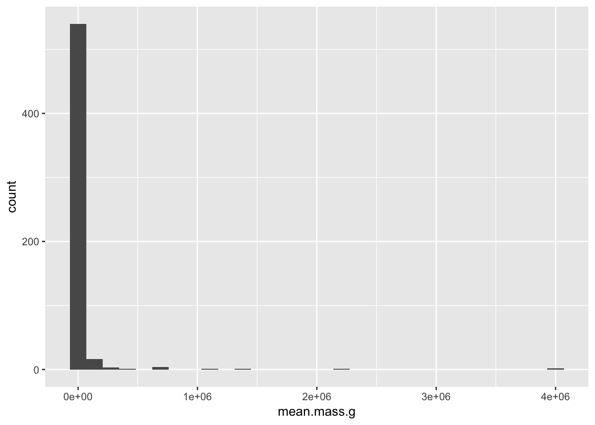
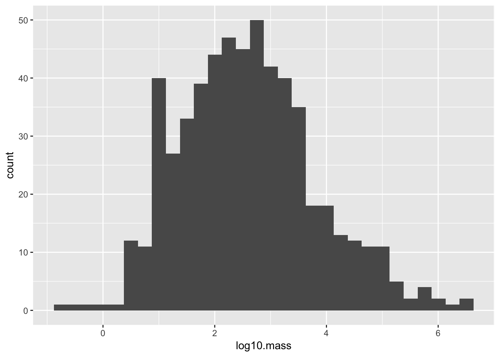
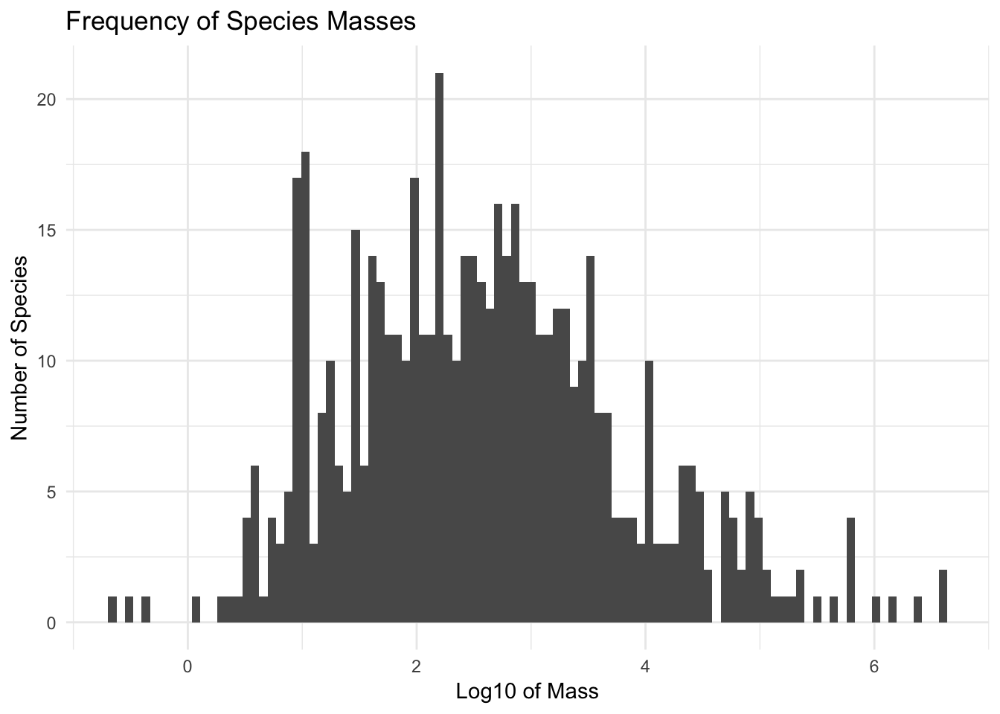
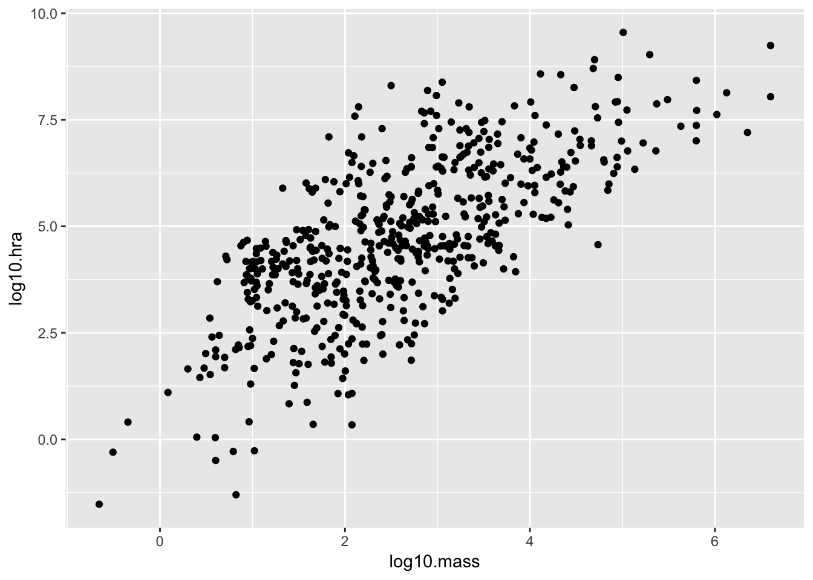
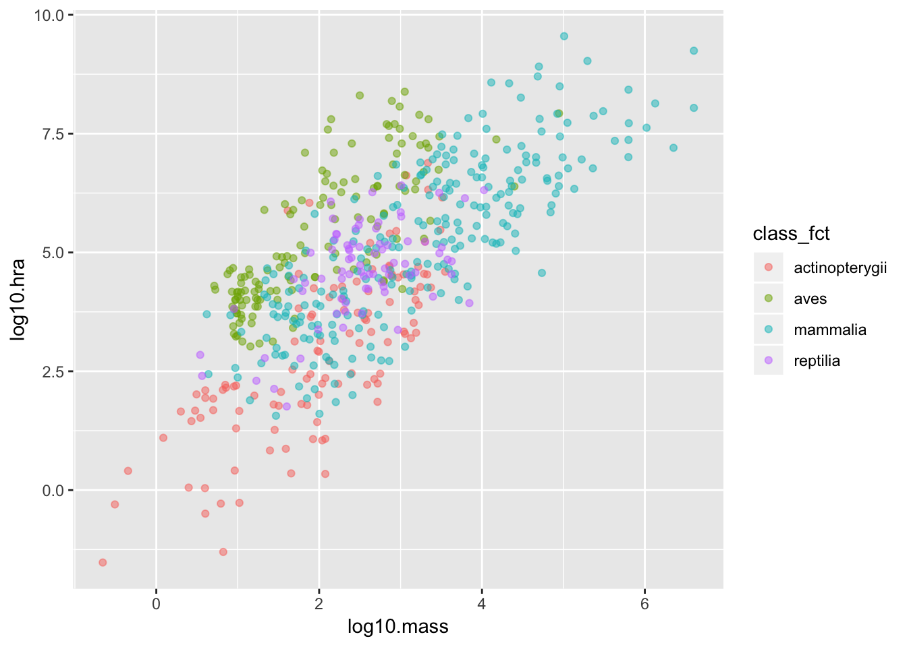
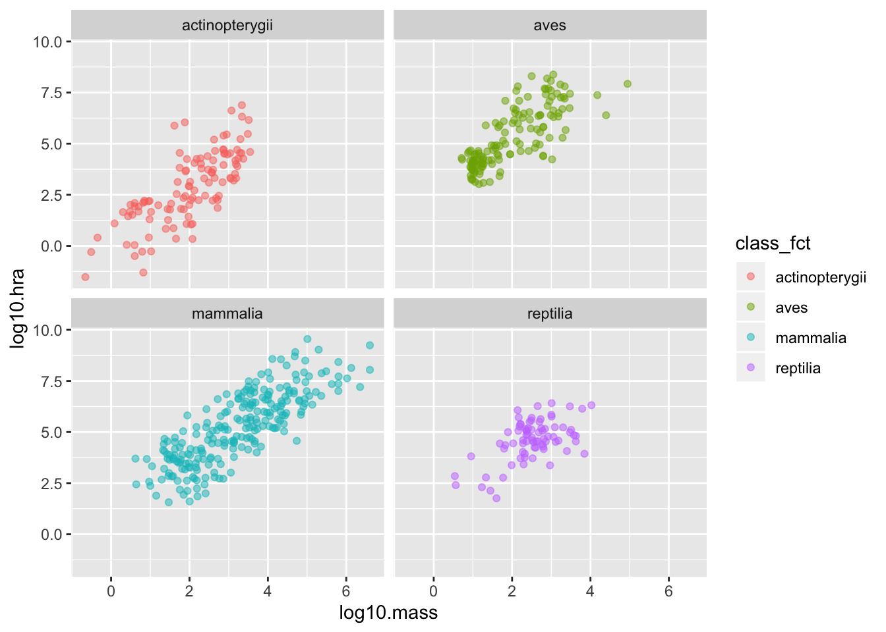
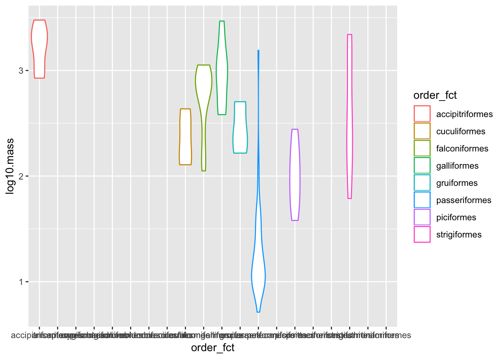
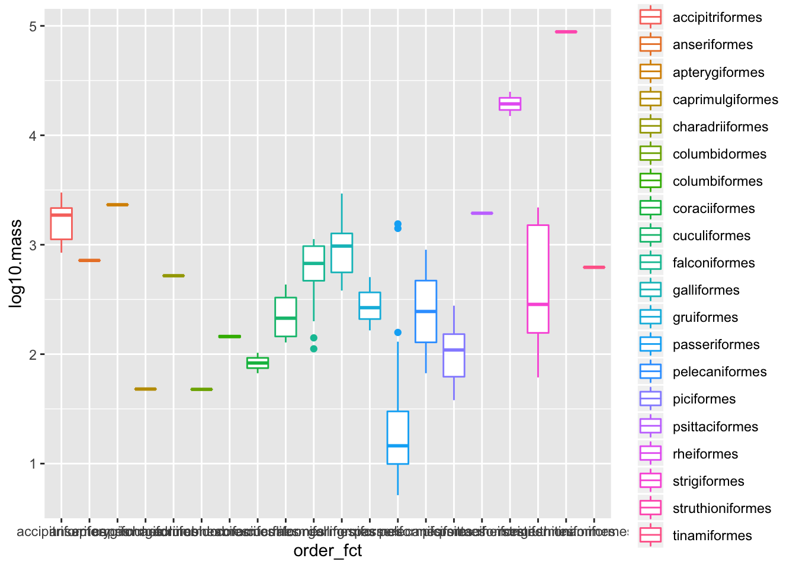
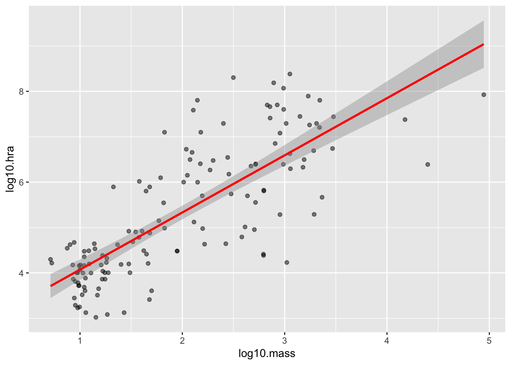
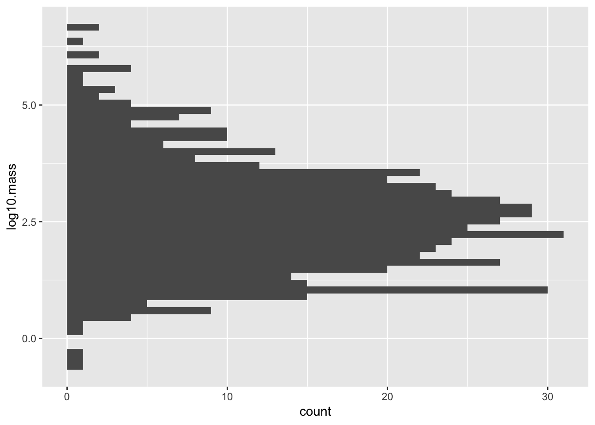

Chapter 9 Practice
We have covered a lot in the last few lessons, so this one presents some practice exercises to ground what we have learned and introduce a few more commonly-used functions.
9.1 Working with a single tidy table
9.1.1 Load the tidyverse collection of libraries and the here library for constructing paths:
library(tidyverse)
library(here)9.1.2 Use here::here to construct a path to a file and readr::read_csv to read that file:
path = here::here("data", "person.csv")
person <- readr::read_csv(path)Parsed with column specification:
cols(
person_id = col_character(),
personal_name = col_character(),
family_name = col_character()
)person# A tibble: 5 x 3
person_id personal_name family_name
<chr> <chr> <chr>
1 dyer William Dyer
2 pb Frank Pabodie
3 lake Anderson Lake
4 roe Valentina Roerich
5 danforth Frank Danforth Read survey/site.csv.
9.1.3 Count rows and columns using nrow and ncol:
nrow(person)[1] 5ncol(person)[1] 3How many rows and columns are in the site data?
9.1.4 Format strings using glue::glue:
print(glue::glue("person has {nrow(person)} rows and {ncol(person)} columns"))person has 5 rows and 3 columnsPrint a nicely-formatted summary of the number of rows and columns in the site data.
9.1.5 Use colnames to get the names of columns and paste to join strings together:
print(glue::glue("person columns are {paste(colnames(person), collapse = ' ')}"))person columns are person_id personal_name family_namePrint a nicely-formatted summary of the names of the columns in the site data.
9.1.6 Use dplyr::select to create a new table with a subset of columns by name:
dplyr::select(person, family_name, personal_name)# A tibble: 5 x 2
family_name personal_name
<chr> <chr>
1 Dyer William
2 Pabodie Frank
3 Lake Anderson
4 Roerich Valentina
5 Danforth Frank Create a table with just the latitudes and longitudes of sites.
9.1.7 Use dplyr::filter to create a new table with a subset of rows by values:
dplyr::filter(person, family_name < "M")# A tibble: 3 x 3
person_id personal_name family_name
<chr> <chr> <chr>
1 dyer William Dyer
2 lake Anderson Lake
3 danforth Frank Danforth Create a table with only sites south of -48 degrees.
9.1.8 Use the pipe operator %>% to combine operations:
person %>%
dplyr::select(family_name, personal_name) %>%
dplyr::filter(family_name < "M")# A tibble: 3 x 2
family_name personal_name
<chr> <chr>
1 Dyer William
2 Lake Anderson
3 Danforth Frank Create a table with only the latitudes and longitudes of sites south of -48 degrees.
9.1.9 Use dplyr::mutate to create a new column with calculated values and stringr::str_length to calculate string length:
person %>%
dplyr::mutate(name_length = stringr::str_length(family_name))# A tibble: 5 x 4
person_id personal_name family_name name_length
<chr> <chr> <chr> <int>
1 dyer William Dyer 4
2 pb Frank Pabodie 7
3 lake Anderson Lake 4
4 roe Valentina Roerich 7
5 danforth Frank Danforth 8Use the built-in function round to create a table with latitudes and longitudes rounded to integers.
9.1.10 Use dplyr::arrange to order rows and (optionally) dplyr::desc to impose descending order:
person %>%
dplyr::mutate(name_length = stringr::str_length(family_name)) %>%
dplyr::arrange(dplyr::desc(name_length))# A tibble: 5 x 4
person_id personal_name family_name name_length
<chr> <chr> <chr> <int>
1 danforth Frank Danforth 8
2 pb Frank Pabodie 7
3 roe Valentina Roerich 7
4 dyer William Dyer 4
5 lake Anderson Lake 4Create a table sorted by decreasing longitude (i.e., most negative longitude last).
9.2 Working with grouped data
9.2.1 Read survey/measurements.csv:
measurements <- readr::read_csv(here::here("data", "measurements.csv"))Parsed with column specification:
cols(
visit_id = col_double(),
visitor = col_character(),
quantity = col_character(),
reading = col_double()
)And look at the data with View:
View(measurements)9.2.2 Find rows where reading is not NA and saved as cleaned:
cleaned <- measurements %>%
dplyr::filter(!is.na(reading))
cleaned# A tibble: 20 x 4
visit_id visitor quantity reading
<dbl> <chr> <chr> <dbl>
1 619 dyer rad 9.82
2 619 dyer sal 0.13
3 622 dyer rad 7.8
4 622 dyer sal 0.09
5 734 pb rad 8.41
6 734 lake sal 0.05
7 734 pb temp -21.5
8 735 pb rad 7.22
9 735 <NA> sal 0.06
10 735 <NA> temp -26
11 751 pb rad 4.35
12 751 pb temp -18.5
13 752 lake rad 2.19
14 752 lake sal 0.09
15 752 lake temp -16
16 752 roe sal 41.6
17 837 lake rad 1.46
18 837 lake sal 0.21
19 837 roe sal 22.5
20 844 roe rad 11.2 Rewrite the filter expression to select rows where the visitor and quantity are not NA either.
9.2.3 Group measurements by quantity measured and count the number of each (the column is named n automatically):
cleaned %>%
dplyr::group_by(quantity) %>%
dplyr::count()# A tibble: 3 x 2
# Groups: quantity [3]
quantity n
<chr> <int>
1 rad 8
2 sal 7
3 temp 3Group by person and quantity measured.
9.2.4 Find the minimum, average, and maximum for each quantity:
cleaned %>%
dplyr::group_by(quantity) %>%
dplyr::summarize(low = min(reading), mid = mean(reading), high = max(reading))# A tibble: 3 x 4
quantity low mid high
<chr> <dbl> <dbl> <dbl>
1 rad 1.46 6.56 11.2
2 sal 0.05 9.24 41.6
3 temp -21.5 -18.7 -16 Look at the range for each combination of person and quantity.
9.2.5 Rescale salinity measurements that are greater than 1:
cleaned <- cleaned %>%
dplyr::mutate(reading = ifelse(quantity == 'sal' & reading > 1.0, reading/100, reading))
cleaned# A tibble: 18 x 4
visit_id visitor quantity reading
<dbl> <chr> <chr> <dbl>
1 619 dyer rad 9.82
2 619 dyer sal 0.13
3 622 dyer rad 7.8
4 622 dyer sal 0.09
5 734 pb rad 8.41
6 734 lake sal 0.05
7 734 pb temp -21.5
8 735 pb rad 7.22
9 751 pb rad 4.35
10 751 pb temp -18.5
11 752 lake rad 2.19
12 752 lake sal 0.09
13 752 lake temp -16
14 752 roe sal 0.416
15 837 lake rad 1.46
16 837 lake sal 0.21
17 837 roe sal 0.225
18 844 roe rad 11.2 Do the same calculation use case_when.
9.2.6 Read visited.csv, drop the NAs, and join with the cleaned-up table of readings:
cleaned <- readr::read_csv(here::here("data", "visited.csv")) %>%
dplyr::filter(!is.na(visit_date)) %>%
dplyr::inner_join(cleaned, by = c("visit_id" = "visit_id"))Parsed with column specification:
cols(
visit_id = col_double(),
site_id = col_character(),
visit_date = col_date(format = "")
)cleaned# A tibble: 14 x 6
visit_id site_id visit_date visitor quantity reading
<dbl> <chr> <date> <chr> <chr> <dbl>
1 619 DR-1 1927-02-08 dyer rad 9.82
2 619 DR-1 1927-02-08 dyer sal 0.13
3 622 DR-1 1927-02-10 dyer rad 7.8
4 622 DR-1 1927-02-10 dyer sal 0.09
5 734 DR-3 1930-01-07 pb rad 8.41
6 734 DR-3 1930-01-07 lake sal 0.05
7 734 DR-3 1930-01-07 pb temp -21.5
8 735 DR-3 1930-01-12 pb rad 7.22
9 751 DR-3 1930-02-26 pb rad 4.35
10 751 DR-3 1930-02-26 pb temp -18.5
11 837 MSK-4 1932-01-14 lake rad 1.46
12 837 MSK-4 1932-01-14 lake sal 0.21
13 837 MSK-4 1932-01-14 roe sal 0.225
14 844 DR-1 1932-03-22 roe rad 11.2 Join visited.csv with site.csv to get (date, latitude, longitude) triples for site visits.
9.2.7 Find the dates of the highest radiation reading at each site:
cleaned %>%
dplyr::filter(quantity == "rad") %>%
dplyr::group_by(site_id) %>%
dplyr::mutate(max_rad = max(reading)) %>%
dplyr::filter(reading == max_rad)# A tibble: 3 x 7
# Groups: site_id [3]
visit_id site_id visit_date visitor quantity reading max_rad
<dbl> <chr> <date> <chr> <chr> <dbl> <dbl>
1 734 DR-3 1930-01-07 pb rad 8.41 8.41
2 837 MSK-4 1932-01-14 lake rad 1.46 1.46
3 844 DR-1 1932-03-22 roe rad 11.2 11.2 Another way to do it:
cleaned %>%
dplyr::filter(quantity == "rad") %>%
dplyr::group_by(site_id) %>%
dplyr::top_n(1, reading) %>%
dplyr::select(site_id, visit_date, reading)# A tibble: 3 x 3
# Groups: site_id [3]
site_id visit_date reading
<chr> <date> <dbl>
1 DR-3 1930-01-07 8.41
2 MSK-4 1932-01-14 1.46
3 DR-1 1932-03-22 11.2 Explain why this doesn’t work.
cleaned %>%
dplyr::filter(quantity == "rad") %>%
dplyr::group_by(site_id) %>%
dplyr::summarize(max_rad = max(reading)) %>%
dplyr::ungroup() %>%
dplyr::filter(reading == max_rad)Error: object 'reading' not found9.2.8 Normalize radiation against the highest radiation seen per site:
cleaned %>%
dplyr::filter(quantity == "rad") %>%
dplyr::group_by(site_id) %>%
dplyr::mutate(
max_rad = max(reading),
frac_rad = reading / max_rad) %>%
dplyr::select(visit_id, site_id, visit_date, frac_rad)# A tibble: 7 x 4
# Groups: site_id [3]
visit_id site_id visit_date frac_rad
<dbl> <chr> <date> <dbl>
1 619 DR-1 1927-02-08 0.873
2 622 DR-1 1927-02-10 0.693
3 734 DR-3 1930-01-07 1
4 735 DR-3 1930-01-12 0.859
5 751 DR-3 1930-02-26 0.517
6 837 MSK-4 1932-01-14 1
7 844 DR-1 1932-03-22 1 Normalize salinity against mean salinity by site.
9.2.9 Find stepwise change in radiation per site by date:
cleaned %>%
dplyr::filter(quantity == "rad") %>%
dplyr::group_by(site_id) %>%
dplyr::mutate(delta_rad = reading - dplyr::lag(reading)) %>%
dplyr::arrange(site_id, visit_date)# A tibble: 7 x 7
# Groups: site_id [3]
visit_id site_id visit_date visitor quantity reading delta_rad
<dbl> <chr> <date> <chr> <chr> <dbl> <dbl>
1 619 DR-1 1927-02-08 dyer rad 9.82 NA
2 622 DR-1 1927-02-10 dyer rad 7.8 -2.02
3 844 DR-1 1932-03-22 roe rad 11.2 3.45
4 734 DR-3 1930-01-07 pb rad 8.41 NA
5 735 DR-3 1930-01-12 pb rad 7.22 -1.19
6 751 DR-3 1930-02-26 pb rad 4.35 -2.87
7 837 MSK-4 1932-01-14 lake rad 1.46 NA Find length of time between visits by site.
9.2.10 Find sites that experience any stepwise increase in radiation between visits:
cleaned %>%
dplyr::filter(quantity == "rad") %>%
dplyr::group_by(site_id) %>%
dplyr::mutate(delta_rad = reading - dplyr::lag(reading)) %>%
dplyr::filter(!is.na(delta_rad)) %>%
dplyr::summarize(any_increase = any(delta_rad > 0)) %>%
dplyr::filter(any_increase)# A tibble: 1 x 2
site_id any_increase
<chr> <lgl>
1 DR-1 TRUE Find sites with visits more than one year apart.
9.3 Creating charts
We will use data on the mass and home range area (HRA) of various species from:
Tamburello N, Côté IM, Dulvy NK (2015) Data from: Energy and the scaling of animal space use. Dryad Digital Repository. https://doi.org/10.5061/dryad.q5j65
hra <- readr::read_csv(here::here("data", "home-range-database.csv"))Parsed with column specification:
cols(
.default = col_character(),
mean.mass.g = col_double(),
log10.mass = col_double(),
mean.hra.m2 = col_double(),
log10.hra = col_double(),
preymass = col_double(),
log10.preymass = col_double(),
PPMR = col_double()
)See spec(...) for full column specifications.head(hra)# A tibble: 6 x 24
taxon common.name class order family genus species primarymethod N
<chr> <chr> <chr> <chr> <chr> <chr> <chr> <chr> <chr>
1 lake… american e… acti… angu… angui… angu… rostra… telemetry 16
2 rive… blacktail … acti… cypr… catos… moxo… poecil… mark-recaptu… <NA>
3 rive… central st… acti… cypr… cypri… camp… anomal… mark-recaptu… 20
4 rive… rosyside d… acti… cypr… cypri… clin… fundul… mark-recaptu… 26
5 rive… longnose d… acti… cypr… cypri… rhin… catara… mark-recaptu… 17
6 rive… muskellunge acti… esoc… esoci… esox masqui… telemetry 5
# … with 15 more variables: mean.mass.g <dbl>, log10.mass <dbl>,
# alternative.mass.reference <chr>, mean.hra.m2 <dbl>, log10.hra <dbl>,
# hra.reference <chr>, realm <chr>, thermoregulation <chr>,
# locomotion <chr>, trophic.guild <chr>, dimension <chr>,
# preymass <dbl>, log10.preymass <dbl>, PPMR <dbl>,
# prey.size.reference <chr>9.3.1 Look at how mass is distributed:
ggplot2::ggplot(hra) +
ggplot2::geom_histogram(mapping = aes(x = mean.mass.g))`stat_bin()` using `bins = 30`. Pick better value with `binwidth`.
Try again with log10.mass:
ggplot2::ggplot(hra) +
ggplot2::geom_histogram(mapping = aes(x = log10.mass))`stat_bin()` using `bins = 30`. Pick better value with `binwidth`.
Create histograms showing the distribution of home range area using linear and log scales.
9.3.2 Change the visual appearance of a chart:
ggplot2::ggplot(hra) +
ggplot2::geom_histogram(mapping = aes(x = log10.mass), bins = 100) +
ggplot2::ggtitle("Frequency of Species Masses") + ggplot2::xlab("Log10 of Mass") + ggplot2::ylab("Number of Species") +
ggplot2::theme_minimal()
Show the distribution of home range areas with a dark background.
9.3.3 Create a scatterplot showing the relationship between mass and home range area:
ggplot2::ggplot(hra) +
ggplot2::geom_point(mapping = aes(x = log10.mass, y = log10.hra))
Create a similar scatterplot showing the relationship between the raw values rather than the log values.
9.3.4 Colorize scatterplot points by class:
hra %>%
dplyr::mutate(class_fct = as.factor(class)) %>%
ggplot2::ggplot(mapping = aes(x = log10.mass, y = log10.hra, color = class_fct)) +
ggplot2::geom_point(alpha = 0.5)
**Group by order and experiment with different alpha values.*
9.3.5 Create a faceted plot:
hra %>%
dplyr::mutate(class_fct = as.factor(class)) %>%
ggplot2::ggplot(mapping = aes(x = log10.mass, y = log10.hra, color = class_fct)) +
ggplot2::geom_point(alpha = 0.5) +
ggplot2::facet_wrap(~class_fct)
Create a plot faceted by order for just the reptiles.
9.3.6 Fit a linear regression to the logarithmic data for birds:
hra %>%
dplyr::filter(class == "aves") %>%
ggplot2::ggplot(mapping = aes(x = log10.mass, y = log10.hra)) +
ggplot2::geom_point(alpha = 0.5) +
ggplot2::geom_smooth(method = lm, color = 'red')
Fit a line to the raw data for birds rather than the logarithmic data.
9.3.7 Create a violin plot of mass by order for birds:
hra %>%
dplyr::filter(class == "aves") %>%
dplyr::mutate(order_fct = as.factor(order)) %>%
ggplot2::ggplot(mapping = aes(x = order_fct, y = log10.mass, color = order_fct)) +
ggplot2::geom_violin()
Rotate the labels on the X axis to make this readable, then explain the gaps.
9.3.8 Display the same data as a boxplot:
hra %>%
dplyr::filter(class == "aves") %>%
dplyr::mutate(order_fct = as.factor(order)) %>%
ggplot2::ggplot(mapping = aes(x = order_fct, y = log10.mass, color = order_fct)) +
ggplot2::geom_boxplot()
Fix the labels and remove orders that only contain one species.
9.3.9 Save the linear regression plot for birds as a PNG:
hra %>%
dplyr::filter(class == "aves") %>%
ggplot2::ggplot(mapping = aes(x = log10.mass, y = log10.hra)) +
ggplot2::geom_point(alpha = 0.5) +
ggplot2::geom_smooth(method = lm, color = 'red')
ggsave("/tmp/birds.png")Saving 7 x 5 in imageSave the plot as SVG scaled to be 8cm wide.
9.3.10 Create a horizontal histogram with 50 bins:
ggplot2::ggplot(hra) +
ggplot2::geom_histogram(mapping = aes(x = log10.mass), bins = 50) +
ggplot2::coord_flip()
Use stat_summary to summarize the relationship between mass and home range area by class.
9.4 Writing functions
9.4.1 Write and call a function that returns one column from a file:
col_from_file <- function(filename, colname) {
dat <- readr::read_csv(filename)
dat[colname]
}
person_filename <- here::here("data", "person.csv")
col_from_file(person_filename, "family_name")# A tibble: 5 x 1
family_name
<chr>
1 Dyer
2 Pabodie
3 Lake
4 Roerich
5 Danforth Write a function that reads a file and changes the name of one column.
9.4.2 Define a default value for a parameter:
col_from_file <- function(filename, colname, na = c("", "NA")) {
dat <- readr::read_csv(filename, na = na)
dat[colname]
}
col_from_file(person_filename, "family_name", c("Dyer"))# A tibble: 5 x 1
family_name
<chr>
1 <NA>
2 Pabodie
3 Lake
4 Roerich
5 Danforth Write a function that only keeps the first 100 rows of a table unless another value is passed.
9.4.3 Name the value passed for a parameter to make intention clearer:
col_from_file(person_filename, "family_name", na = c("Dyer"))Parsed with column specification:
cols(
person_id = col_character(),
personal_name = col_character(),
family_name = col_character()
)# A tibble: 5 x 1
family_name
<chr>
1 <NA>
2 Pabodie
3 Lake
4 Roerich
5 Danforth Call your function with all of the parameters out of order.
9.4.4 Make functions slightly more robust:
col_from_file <- function(filename, colname, na = c("", "NA")) {
dat <- readr::read_csv(filename, na = na)
stopifnot(colname %in% colnames(dat))
dat[colname]
}
col_from_file(person_filename, "FAMILY", na = c("Dyer"))Error in col_from_file(person_filename, "FAMILY", na = c("Dyer")): colname %in% colnames(dat) is not TRUEFail if the number of rows asked for is less than or equal to zero.
9.4.5 Use quoting and splicing to avoid needing a string for the column name:
cols_from_file <- function(filename, colname, na = c("", "NA")) {
colname = rlang::enquo(colname)
readr::read_csv(filename, na = na) %>%
dplyr::select(!!colname)
}
cols_from_file(person_filename, personal_name)# A tibble: 5 x 1
personal_name
<chr>
1 William
2 Frank
3 Anderson
4 Valentina
5 Frank Modify your function so that users can pass num_rows/2 or a similar expression to specify the number of rows they want to keep.
9.4.6 Select any number of columns:
cols_from_file <- function(filename, ..., na = c("", "NA")) {
readr::read_csv(filename, na = na) %>%
dplyr::select(...)
}
cols_from_file(person_filename, personal_name, family_name)# A tibble: 5 x 2
personal_name family_name
<chr> <chr>
1 William Dyer
2 Frank Pabodie
3 Anderson Lake
4 Valentina Roerich
5 Frank Danforth Can you call cols_from_file to subtract columns rather than keeping them?
9.4.7 Add an optional filter condition:
cols_from_file <- function(filename, ..., na = c("", "NA"), filter_by = NULL) {
temp <- read_csv(filename, na = na) %>%
dplyr::select(...)
filter_by <- rlang::enquo(filter_by)
if (!is.null(filter_by)) {
temp <- temp %>%
filter(!!filter_by)
}
temp
}
cols_from_file(person_filename, personal_name, family_name, filter_by = family_name > "M")Parsed with column specification:
cols(
person_id = col_character(),
personal_name = col_character(),
family_name = col_character()
)# A tibble: 2 x 2
personal_name family_name
<chr> <chr>
1 Frank Pabodie
2 Valentina Roerich Why doesn’t this work if the call to rlang::enquo is moved inside the conditional?
9.4.8 Run a function safely:
cols_from_file(person_filename, NONEXISTENT)Error in .f(.x[[i]], ...): object 'NONEXISTENT' not foundsafe_cols_from_file <- purrr::safely(cols_from_file)
safe_cols_from_file(person_filename, NONEXISTENT)$result
NULL
$error
<simpleError in .f(.x[[i]], ...): object 'NONEXISTENT' not found>safe_cols_from_file(person_filename, person_id)$result
NULL
$error
<Rcpp::exception: Argument 2 filter condition does not evaluate to a logical vector>When is purrr::safely safe to use?
9.4.9 Unpack multiple values in a single assignment:
library(zeallot)
c(result, error) %<-% safe_cols_from_file(person_filename, person_id)
resultNULLerror<Rcpp::exception: Argument 2 filter condition does not evaluate to a logical vector>What happens if there are more variables on the left of %<-% than there are values on the right?
9.4.10 Assign out of function scope with <<-:
call_count = 0
safe_cols_from_file <- purrr::safely(function(filename, ..., na = c("", "NA")) {
call_count <<- call_count + 1
readr::read_csv(filename, na = na) %>%
dplyr::select(...)
})
c(result, error) %<-% safe_cols_from_file(person_filename, family_name)
call_count[1] 1What happens if the variable assigned to with <<- does not exist before the assignment?
9.5 Functional programming
9.5.1 Apply a function to every element of a vector:
long_name <- function(name){
stringr::str_length(name) > 4
}
purrr::map(person$family_name, long_name)[[1]]
[1] FALSE
[[2]]
[1] TRUE
[[3]]
[1] FALSE
[[4]]
[1] TRUE
[[5]]
[1] TRUEModify this example to return a logical vector.
9.5.2 Use an anonymous function:
purrr::map_lgl(person$family_name, function(name) stringr::str_length(name) > 4)[1] FALSE TRUE FALSE TRUE TRUECreate a character vector with all names in upper case.
9.5.3 Use a formula with .x as a shorthand for an anonymous function of one argument:
purrr::map_chr(person$family_name, ~ stringr::str_to_upper(.x))[1] "DYER" "PABODIE" "LAKE" "ROERICH" "DANFORTH"Do you actually need purrr::map_chr to do this?
9.5.4 Map a function of two arguments:
purrr::map2_chr(person$personal_name, person$family_name, ~stringr::str_c(.y, .x, sep = '_'))[1] "Dyer_William" "Pabodie_Frank" "Lake_Anderson"
[4] "Roerich_Valentina" "Danforth_Frank" Calculate a vector of mean.mass.g over mean.hra.m2 for the hra table using purrr::map2_dbl, then explain how you ought to do it instead.
9.5.5 Map a function of three or more arguments:
vals = list(first = person$personal_name, last = person$family_name, ident = person$person_id)
purrr::pmap_chr(vals, function(ident, last, first) stringr::str_c(first, last, ident, sep = '_'))[1] "William_Dyer_dyer" "Frank_Pabodie_pb"
[3] "Anderson_Lake_lake" "Valentina_Roerich_roe"
[5] "Frank_Danforth_danforth"Repeat this without giving names to the elements of vals.
9.5.6 Flattern one level of a nested structure:
purrr::flatten(list(person$personal_name, person$family_name))[[1]]
[1] "William"
[[2]]
[1] "Frank"
[[3]]
[1] "Anderson"
[[4]]
[1] "Valentina"
[[5]]
[1] "Frank"
[[6]]
[1] "Dyer"
[[7]]
[1] "Pabodie"
[[8]]
[1] "Lake"
[[9]]
[1] "Roerich"
[[10]]
[1] "Danforth"Use purrr::keep to discard the elements from the flattened list that are greater than “M”.
9.5.7 Check whether every element passes a test:
purrr::every(person$personal_name, ~.x > 'M')[1] FALSEUse some to check whether any of the elements pass the same test.
9.5.8 Modify specific elements of a list:
purrr::modify_at(person$personal_name, c(2, 4), stringr::str_to_upper)[1] "William" "FRANK" "Anderson" "VALENTINA" "Frank" Use modify_if to upper-case names that are greater than “M”.
9.5.9 Create an acronym:
purrr::reduce(person$personal_name, ~stringr::str_c(.x, stringr::str_sub(.y, 1, 1)), .init = "")[1] "WFAVF"Explain why using stringr::str_c(stringr::str_sub(.x, 1, 1), stringr::str_sub(.y, 1, 1)) doesn’t work.
9.5.10 Create intermediate values:
purrr::accumulate(person$personal_name, ~stringr::str_c(.x, stringr::str_sub(.y, 1, 1)), .init = "")[1] "" "W" "WF" "WFA" "WFAV" "WFAVF"Modify this so that the initial empty string isn’t in the final result.